Twirl Around the Whirl: Brookfield Zoo Gala Raises $2 Million

Brookfield Zoo Chicago marked a milestone 45th year of its signature Whirl gala by raising more than $2 million, continuing the event’s ever-growing impact. Hosted by the Board of Trustees and Women’s Board, the annual celebration brought together more than 550 corporate, civic and philanthropic leaders in downtown Chicago in support of the Zoo’s mission.
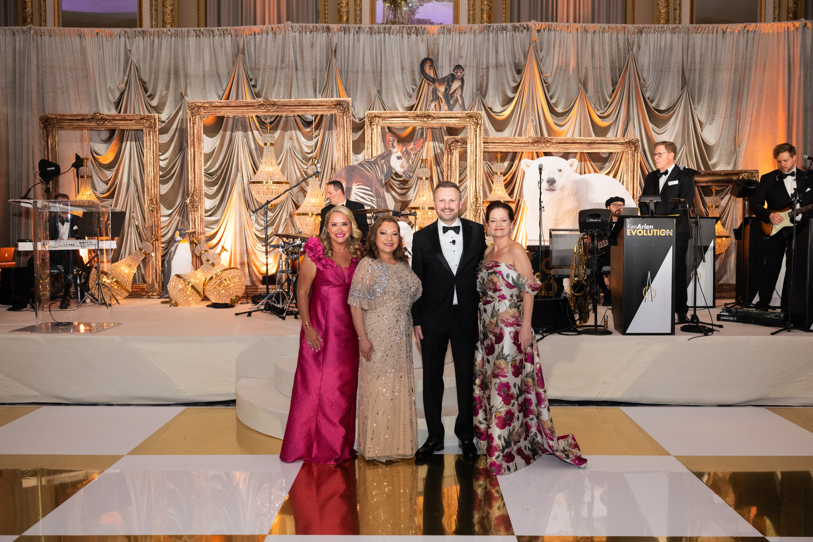
This year’s “Twirl Around the Whirl” theme drew inspiration from the elegance of classic dance—reimagined through the rhythms of the natural world. From the coordinated movement of a wolf pack to the glide of bottlenose dolphins and the unmistakable waddle of penguins, wildlife is constantly in motion; the evening invited guests to reflect on the dance of nature and the role everyone plays in listening to and protecting it—bringing the Zoo’s mission to inspire conservation by connecting people to wildlife and nature to life.
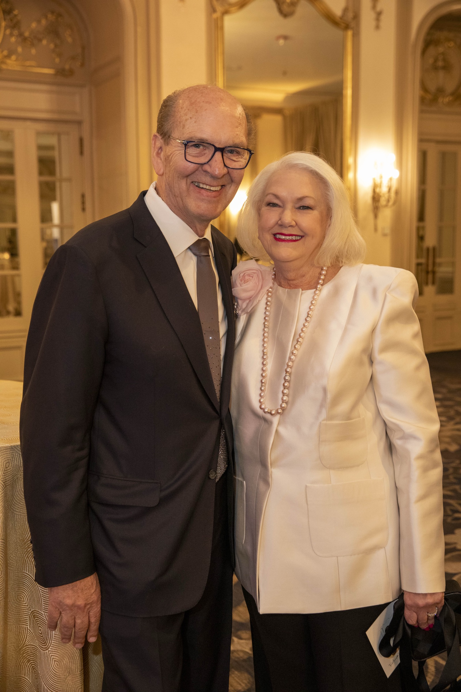
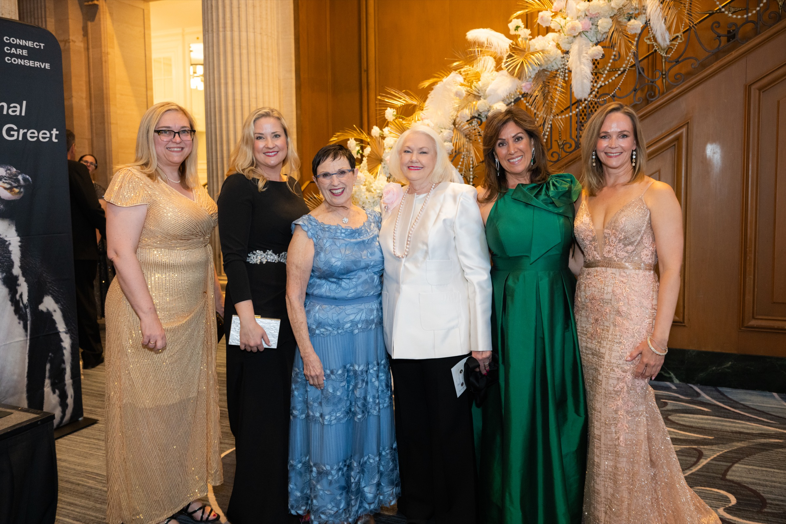
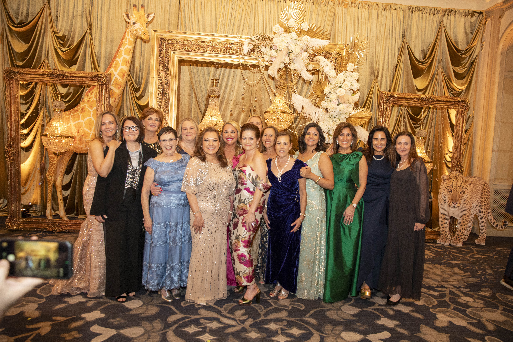
“For nearly a century, Brookfield Zoo Chicago has been part of the civic fabric of this city—an institution that generations of Chicagoans have trusted, learned from and made memories with,” said Brookfield Zoo Chicago President and CEO Dr. Mike Adkesson. “Supporting the Zoo is not only an investment in conservation and education; it is an investment in Chicago itself, and in the enduring institutions that shape its character and legacy.”
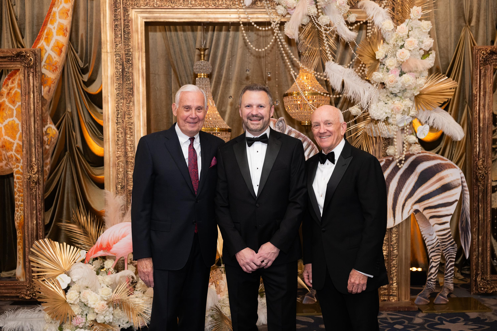
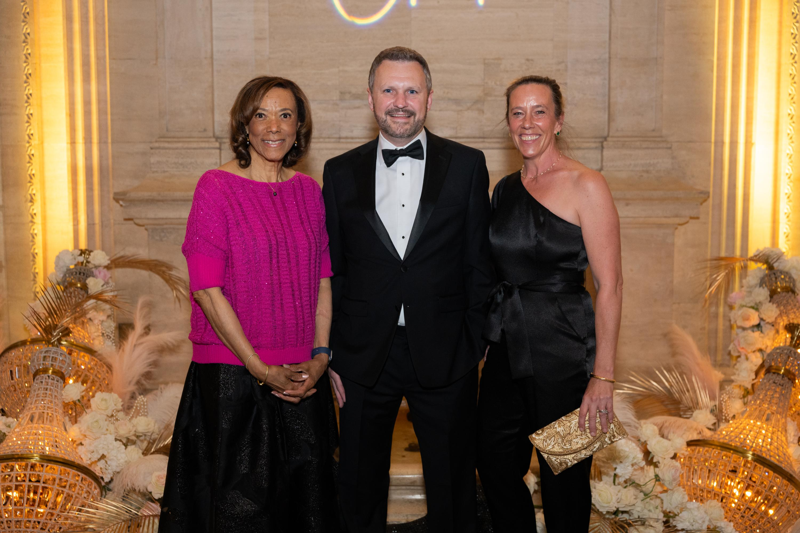
Co-chaired by Board of Trustee and Women’s Board member Sasha Gerritson and Women’s Board member Roxann Giovannini, the evening delighted guests with unexpected wildlife encounters woven throughout the program. Guests came face-to-face with Animal Ambassadors like a leopard tortoise, porcupette (or baby porcupine), baby goat and more.
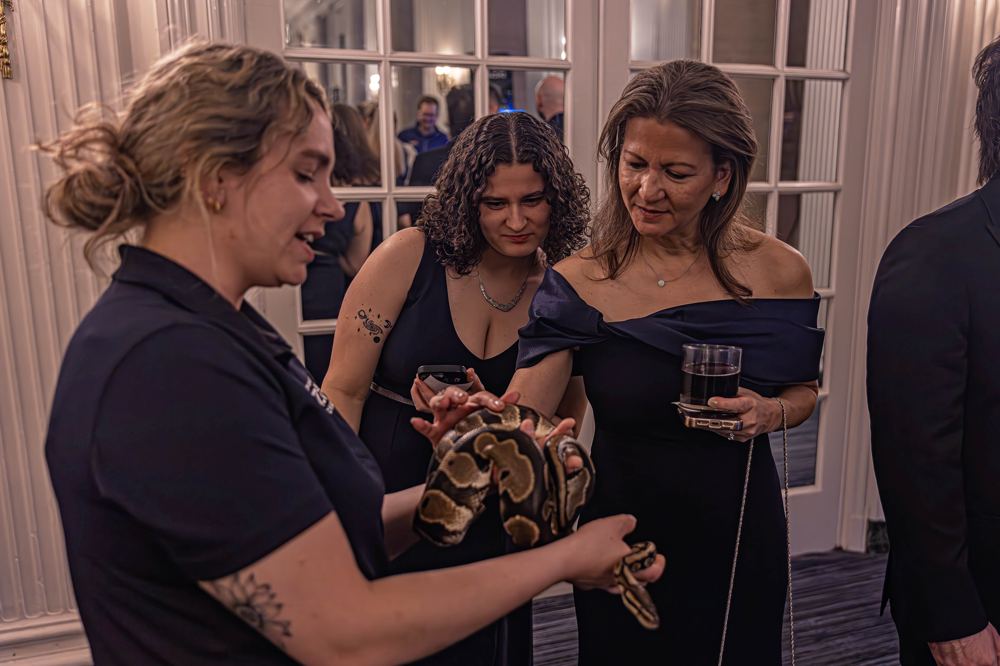
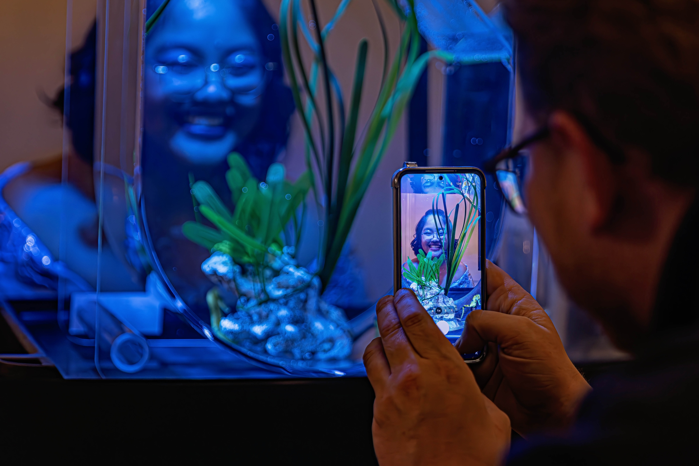
The gala also offered an exclusive update on the Zoo’s future with a first look at updated renderings for Gateway to Africa. This signature habitat builds on the debut of the James & Elizabeth Bramsen Tropical Forests and launches the next phase of Brookfield Zoo Chicago’s Next Century Plan.
In addition to Zoo leadership including Board of Trustees Chair Cherryl Thomas and Women’s Board President Melissa Canning, long-standing supporters and community leaders in attendance included: Cook County Board of Commissioners President Toni Preckwinkle, Forest Preserves of Cook County General Superintendent Adam Bianchi, James and Elizabeth Bramsen, Ardmore Roderick CEO Rashod Johnson, Eli’s Cheesecake Company Co-Owner Maureen Schulman and President Marc Shulman, Helen V. Brach Foundation President Matthew Simon, Leadership Greater Chicago CEO Myetie Hamilton, Raw Thrills President Eugene Jarvis and more.
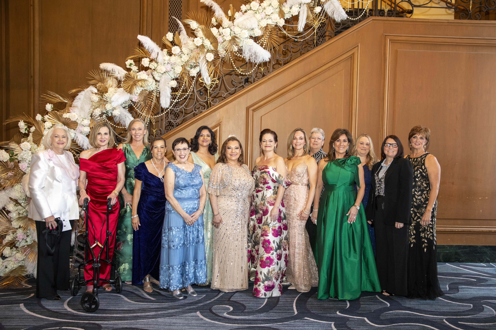
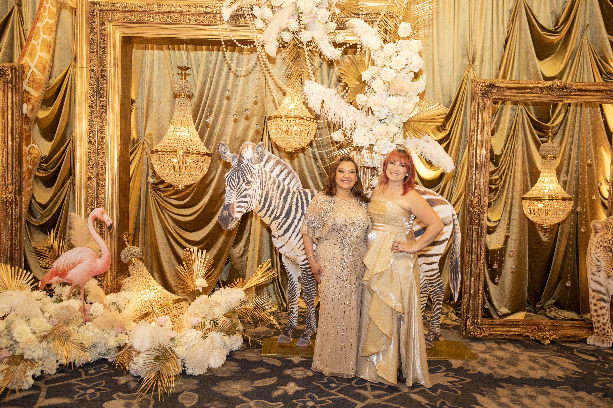
Guests enjoyed specialty cocktails and cuisine from the Hilton Chicago, along with free play on a Super Bikes arcade game, live music from Ken Arlen Evolution Orchestra and dance performances by C5. Additional event support included volunteers from the Zoo’s Young Professionals Council and vendors including Yanni Designs (décor), Encore (event and AV design) and David Goodman from Auction Results as a very dynamic auctioneer.
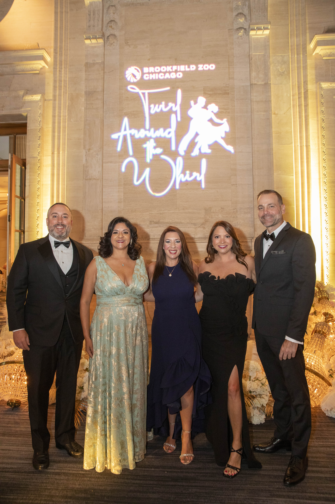
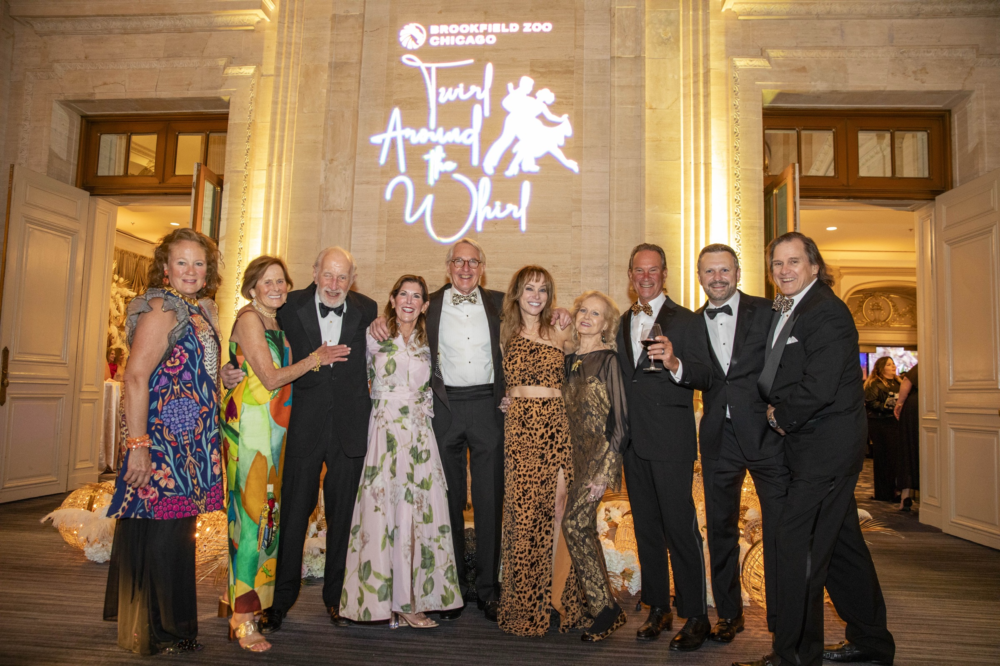
More information about how to support Brookfield Zoo Chicago is available at brookfieldzoo.org/donate.